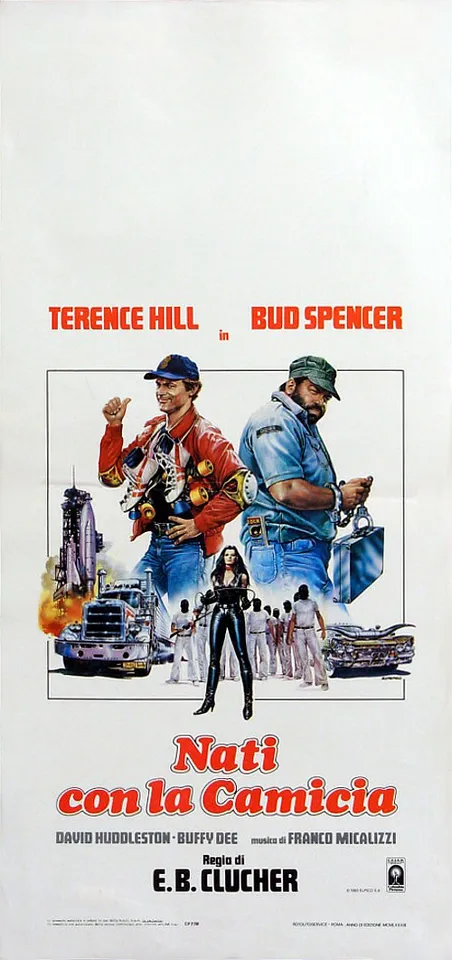

1983 · 14 tracce
Musiche di Franco Micalizzi.
Elenco dell’edizione indicata; comprende versioni discografiche e alternative. Non costituisce un elenco certificato di ogni inserto musicale nel montaggio del film.
Gli elenchi documentano le edizioni pubblicate; la presenza di ciascuna traccia nel montaggio del film non è certificata.
Brani e ascolti
- 01
In the middle of all that trouble again
3:28 - 02
Spies and Guys
3:39 - 03
Caribbean Women
3:46Video non identificato · collegamento a una ricerca
- 04
Go for it Theme
1:48ITA MUSIC
- 05
Fighting at Burger Bar
2:33Franco Micalizzi - Topic
- 06
Spies and Guys (beach sequence)
3:00ITA MUSIC
- 07
Shining Day
3:39Franco Micalizzi - Topic
- 08
Go for it Theme
4:37ITA MUSIC
- 09
Spies and Guys (car sequence)
1:46Orchestra Franco Micalizzi - Topic · Stesso tema · variante non confermata
- 10
Flying to Miami
3:12 - 11
Spies and Guys (helicopter sequence)
3:11ITA MUSIC
- 12
Go for it Theme (cowboy sequence)
2:12ITA MUSIC
- 13
Spies in Action
1:36Franco Micalizzi - Topic
- 14
In the middle of all that trouble again (final)
2:29· Stesso tema · variante non confermata
Fonti e riferimenti
- Scheda del film e creditiConsultata il 3 ottobre 2026.
- Edizione e lista delle tracceConsultata il 3 ottobre 2026.
- Beat Records — colonna sonora ampliataConsultata il 3 ottobre 2026.
- Locandina — Nati con la camiciaConsultata il 3 ottobre 2026.